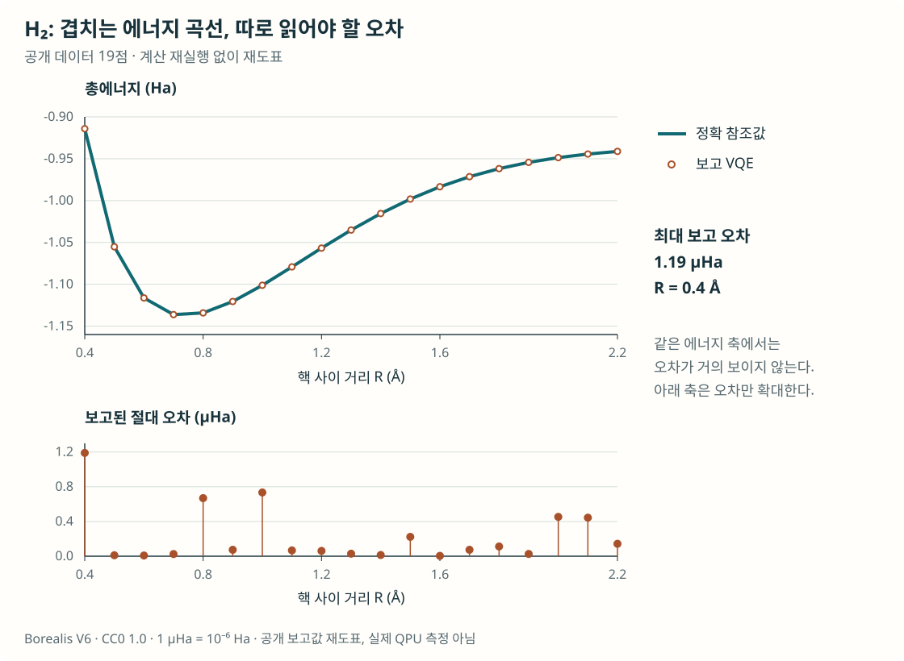
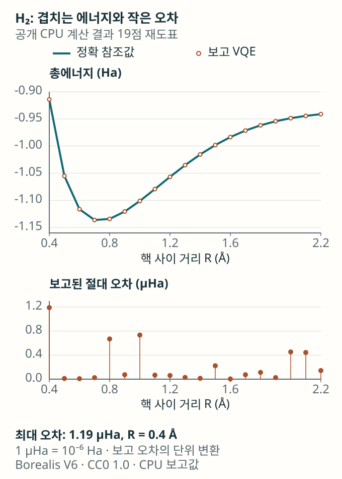
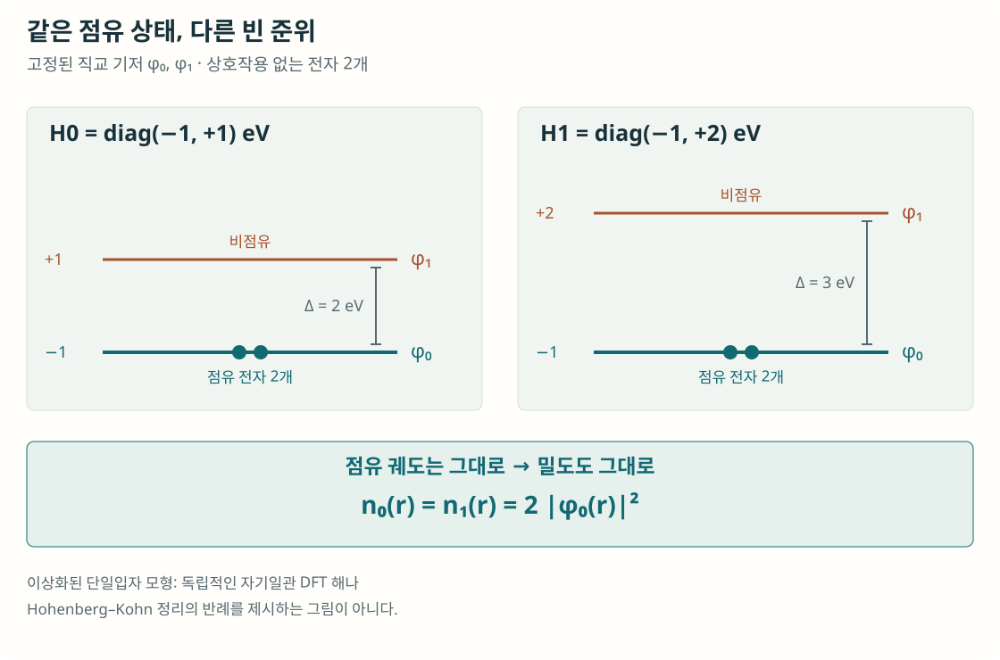
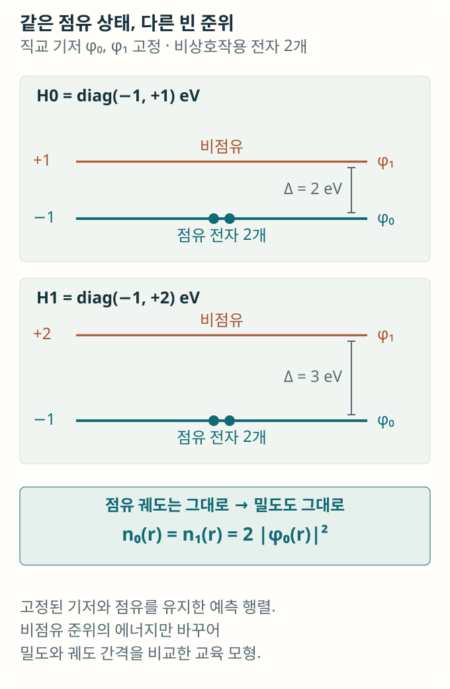
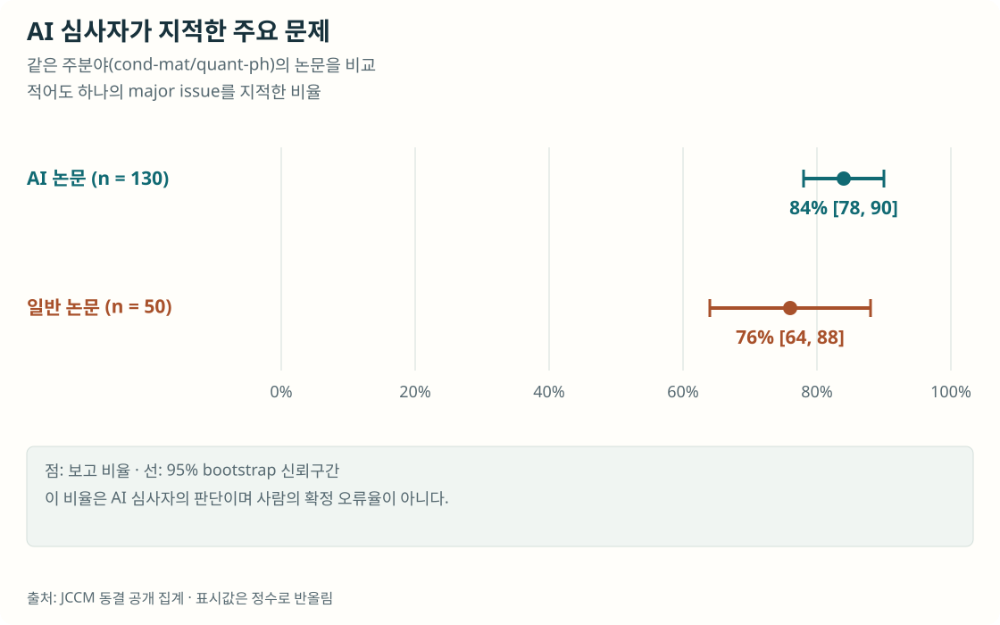
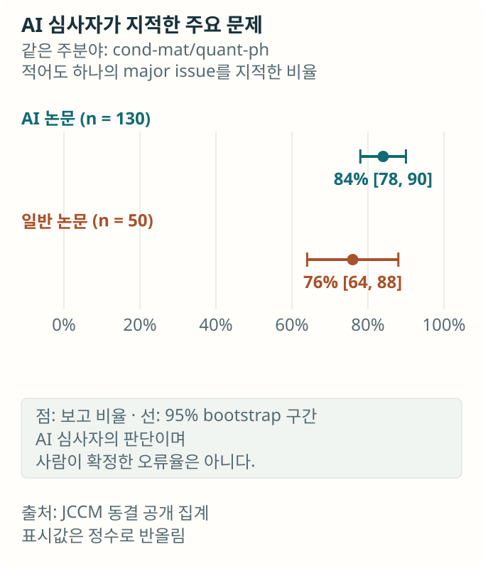

양자와 재료 연구의 AI 자동화와 과학적 판단
AI는 연구 질문을 계산과 그림으로 옮기고, 재료의 전자구조를 빠르게 예측하기 시작했다. 그 결과를 지식으로 쓰려면 질문과 조건, 학습 목표와 검증 방법을 함께 설계해야 한다. 양자·재료 연구의 성과와 독립 기준 계산·표본 검토의 방법을 따라, 자동화 속에서 연구자의 판단이 어떻게 달라지는지 살펴본다.
내용 살펴보기
두 수소 원자 사이를 조금씩 벌리면 분자의 에너지는 어떻게 달라질까. 가까이 붙을 때와 멀리 떨어질 때의 전자 상태를 계산해 곡선을 그리면, 원자들이 어느 거리에서 안정한 결합을 만드는지 살펴볼 수 있다. 계산화학을 배우는 학생에게 익숙한 문제지만, 처음 사용하는 프로그램으로 끝까지 풀려면 준비할 것이 많다. 분자를 표현할 모형을 정하고, 전자 상태를 계산할 방법을 선택하고, 거리마다 계산을 반복한 뒤 결과가 맞는지 확인해야 한다.
Ignacio Gustin과 동료들의 El Agente Cuántico는 이런 요청을 받아 소프트웨어 문서를 찾고 코드를 작성해 계산과 그림을 만드는 AI 시스템이다. 연구진은 수소 분자의 거리별 에너지부터 환경과 상호작용하는 양자계의 시간 변화, 다체계의 상태와 오류정정 모사까지 여러 과제를 제시했다. 계산 도구마다 전문 에이전트를 두고 중앙 에이전트가 이들의 작업을 조정한다. [1]
이 성과는 연구자가 매번 모든 프로그램의 문법을 익혀야 했던 부담을 줄일 가능성을 보여준다. 동시에 더 많은 계산을 할 수 있게 된 뒤 무엇을 새로 판단할 수 있는지 묻게 한다. 양자와 재료 연구에서는 AI가 계산 절차를 수행하는 일과, 계산 자체를 학습 모형으로 근사하는 일이 함께 발전하고 있다. 두 접근은 전문가의 지식을 서로 다른 곳에 요구한다. 하나는 연구 의도를 실행 과정에서 보존해야 하고, 다른 하나는 AI에게 무엇을 정확하게 맞히도록 가르칠지 결정해야 한다.
질문을 계산으로 옮기는 에이전트
양자 시뮬레이션은 분자와 물질의 양자 상태, 에너지, 시간에 따른 변화를 계산하는 연구 방법이다. 전자나 스핀이 많아지면 상태를 표현하는 공간도 빠르게 커져, 정확한 계산과 근사 방법 사이에서 선택해야 한다. 실용적인 방법이 있어도 프로그램마다 표현과 사용법이 달라 계산을 연결하는 데 전문성이 필요하다.
El Agente Cuántico는 이 소프트웨어 사용 과정을 자동화한다. CUDA-Q, QuTiP, TeNPy 같은 도구의 문서와 예제를 그때그때 찾아 필요한 계산을 구성한다. 언어모델이 코드를 만들면 수치 계산 도구가 고전 컴퓨터에서 이를 실행하고, 에이전트가 출력을 조사한다. 연구진은 이 시뮬레이션 체계를 실제 양자 하드웨어에 연결하는 일을 후속 개발 단계로 제시했다. [1]
수소 분자 과제에서는 에너지를 낮추도록 시험 상태의 매개변수를 조절하는 변분 양자 고유값 풀이법(variational quantum eigensolver, VQE)을 사용했다. 공개된 생성 코드와 결과 표에는 간단한 STO-3G 기저 모형, 고전 CPU 시뮬레이터, 0.4~2.2 Å의 원자 간 거리 19개가 기록돼 있다. 여기서 기저는 전자의 공간적 상태를 유한한 함수들로 표현하는 선택이다. 각 거리에서 VQE로 구한 에너지를 같은 STO-3G 모형의 행렬을 직접 대각화한 참조 에너지와 대조했다. 이 비교로 선택한 분자 모형의 바닥상태를 VQE가 얼마나 가깝게 계산했는지 살필 수 있다. [1, 2]
그림 1은 저자들이 공개한 결과 표의 19점을 다시 그린 것이다. 위쪽에서는 거리마다 두 계산의 에너지가 거의 겹치고, 아래쪽에서는 원표에 보고된 작은 오차를 별도 축으로 볼 수 있다. Ha는 원자 규모 계산에 쓰는 에너지 단위인 하트리이며, mHa와 μHa는 각각 그 천분의 1과 백만분의 1이다. 표에 기록된 최대 차이는 0.001190 mHa, 즉 1.19 μHa다. 같은 계산 조건과 참조값이 남아 있어 ‘곡선이 매끈하다’는 인상에서 더 나아가 구체적인 차이를 확인할 수 있다. [2]


같은 실행을 반복할 때 드러나는 차이
분자 에너지 곡선처럼 답을 비교하기 쉬운 과제에서 시작하면 자동화의 범위와 한계를 함께 읽을 수 있다. 연구진은 별도로 VQE, Bell 상태, Ising 동역학, Lindblad 동역학, 계층적 운동방정식의 다섯 과제를 같은 요청으로 각각 10회 수행했다. 각 실행은 이전 실행의 기억 없이 시작했고, 과제마다 한 명의 전문가가 10회를 같은 평가표로 채점했다. 구현, 결과와 검증, 그림과 해석에 부분점수를 주는 100점 평가표에서 과제별 평균은 97~100점이었다. [1]
Lindblad 과제는 주변 환경 때문에 양자계가 변하는 과정을 다룬다. 고립된 계에서는 유지되던 양자적 진동이 환경과의 상호작용으로 약해지거나 다른 정상상태로 향할 수 있다. 이를 계산하려면 계의 모형뿐 아니라 환경의 영향을 어떻게 근사할지도 정해야 한다. 연구진은 한 큐비트의 고립된 변화와 감쇠가 있는 변화를 비교하고, 시간에 따른 z방향 관측량을 구하도록 요청했다. 이 값은 두 기준 상태의 점유 확률 차이를 나타낸다.
논문이 보고한 한 실행에서는 요청한 z성분 대신 y성분을 계산했다. 다른 Ising 실행 두 번에서는 초기 상태가 무작위였지만, 요구한 Haar 분포를 따르지 않았다고 보고했다. Haar 분포는 가능한 순수 상태를 특정 방향에 치우치지 않게 뽑는 기준으로, 상태를 생성하는 절차도 이 분포에 맞아야 한다. 두 사례는 실행된 계산의 관측량과 초기 상태가 원래 요청을 유지했는지 살펴야 할 이유를 보여준다. [1]
이때 전문가는 그림의 모양만 보고 판단할 수 없다. 어떤 성분을 계산했는지, 초기 상태를 어떻게 뽑았는지, 환경 근사가 연구 질문에 적합한지 확인해야 한다. 반복되는 검사는 코드로 만들 수 있고, 다른 에이전트가 수행하도록 설계할 수도 있다. 그 검사가 무엇을 잡아내야 하는지 명확하게 만드는 일도 전문성이 사용되는 방식이다.
재료를 예측할 때 무엇을 맞혀야 하는가
재료과학에서는 AI가 계산 프로그램을 운영하는 데서 더 나아가 전자구조 계산의 일부를 대신하기도 한다. 밀도범함수이론(density functional theory, DFT)의 Kohn–Sham 계산은 전자 상태를 구하고, 그 상태로부터 계산에 사용할 연산자를 다시 만드는 과정을 반복한다. 전자 상태와 연산자가 서로 맞아들어갈 때까지 반복하는 자기일관장(self-consistent field, SCF) 계산에는 시간이 든다.
학습한 해밀토니안 모형은 원자의 종류와 위치에서 이 연산자의 행렬을 예측한다. 그 행렬을 풀면 전자들이 차지하는 궤도와 에너지를 얻는다. 앞서 에이전트가 계산 소프트웨어를 운영했다면, 여기서는 신경망이 전자구조의 수치 계산 결과를 근사한다. 예측한 행렬에서 관심 있는 물리량을 얼마나 정확하게 얻는지가 모형의 쓸모를 결정한다. [3]
Fang Sun과 동료들의 FermiScope는 이 지점에서 학습 목표를 다시 살폈다. 흔히 사용하는 목표는 예측 행렬의 각 숫자가 참조값과 얼마나 다른지 줄이는 것이다. 그러나 모든 숫자의 오차가 관심 있는 물리량에 같은 영향을 주지는 않는다. 논문의 QHNet 진단에서는 행렬 원소 오차만 더 줄이는 추가 학습 뒤에, 평균 행렬 오차는 77.56에서 74.44 μHa로 작아졌지만 HOMO–LUMO 간격 오차는 9632에서 14769 μHa로 커졌다. 두 오차는 서로 다른 대상을 측정하고 있었다. [3]
HOMO와 LUMO는 각각 전자가 채운 가장 높은 궤도와 비어 있는 가장 낮은 궤도다. 그 에너지 차이인 HOMO–LUMO 간격을 예측하려면, 행렬 원소의 평균 오차와 함께 이 두 궤도의 에너지가 얼마나 잘 맞는지 살펴야 한다.
전자밀도를 학습 기준으로 삼아도 놓치는 차이가 있다. 같은 두 기저 함수에서 두 전자가 반대 스핀으로 아래 공간 궤도를 채운 간단한 예측 행렬을 생각해 보자. 아래 궤도의 에너지는 −1 eV로 두고, 위 궤도의 에너지만 +1에서 +2 eV로 바꾼다. 점유된 궤도가 그대로이므로 두 예측의 전자밀도는 같지만, 궤도 간격은 2에서 3 eV로 달라진다. 무엇을 비교하느냐에 따라 같은 예측이 맞아 보일 수도, 중요한 차이를 놓칠 수도 있다.
그림 2는 이미 예측한 두 수준 행렬에서 기저 함수와 점유를 고정한 채 비점유 준위만 바꾼 교육 모형이다. 밀도를 구할 때 사용하는 점유 궤도는 그대로 남고, 비점유 준위가 들어가는 에너지 간격만 변한다. 이처럼 밀도가 같은 예측 사이에서도 관심 있는 다른 물리량은 달라질 수 있다.


FermiScope는 공간의 각 위치에서 에너지 문턱 아래 궤도들의 기여를 누적한 국소 상태밀도(cumulative local density of states, cumulative LDOS)를 학습 기준에 더했다. 전자밀도를 한 번 비교하는 데서 에너지에 따른 변화를 함께 비교하는 방식으로 확장한 것이다. 같은 신경망 구조에 다른 학습 기준을 적용했을 때 무엇이 달라지는지 시험할 수 있다. [3]
QH9의 표준 시험 분자 13,084개에서, 세 신경망의 궤도 간격 평균절대오차는 각 모형의 사전학습 오차를 기준으로 49~79% 줄었다. QHNet에서는 9632에서 2027 μHa로, SPHNet에서는 1554에서 789 μHa로, WANet에서는 1684에서 791 μHa로 감소했다. 학습 목표에 에너지별 정보를 더하자 관심 물리량의 예측이 세 모형 모두에서 개선됐다. [3]
예측 행렬은 SCF 계산의 초기값으로도 쓸 수 있다. 원논문 부록의 50개 시험 분자에서는 표준 minao 초기값을 쓸 때보다 반복 횟수가 약 3분의 1 줄고, 추론을 포함한 총시간이 13~15% 줄었다. 사전학습 모형과 여러 추가 학습 방식의 가속 효과는 비슷했다. 이 시간 비교와 앞의 궤도 간격 비교를 함께 보면, 누적 LDOS 학습의 차별점은 관심 물리량의 예측 정확도에서 드러난다. [3]
이미 맞는 조건을 바꾸지 않는 능력
어느 접근을 택하든 연구 의도를 계산 조건으로 옮길 때 지켜야 할 선택이 있다. VASP의 INCAR 파일에는 자성, 전자 상호작용의 근사, 수치 계산과 작업 순서에 관한 선택이 들어간다. 여러 설정이 서로 맞물려 어떤 물리 모형과 계산 절차를 실행할지 정한다.
Bin Shao와 동료들의 INCARBench는 생성·수정한 INCAR 파일을 표준화한 참조 설정과 대조하는 벤치마크다. 48개 재료와 네 작업 유형의 192개 생성 사례를 만들고, 이를 바탕으로 설정을 수정하는 576개 사례를 평가했다. 오류가 없는 입력을 유지하는 경우도 포함했다. 잘못된 값을 고치는 능력과 이미 기준을 만족한 설정을 보존하는 능력을 함께 묻기 위해서다. [4]
이 평가가 묻는 것은 주어진 기준에 맞는 설정을 만들고 수정했는가다. 연구에 사용할 설정은 계산 목적에 맞춰 선택하고, 실행 뒤에는 수렴과 관심 물리량을 확인해야 한다. 어떤 설정이 과거의 편의상 선택이고 어떤 설정이 연구 질문을 유지하는 조건인지 구별하면, 자동화가 지켜야 할 선택과 바꾸어도 될 부분을 구체적으로 정할 수 있다. [4]
논문을 따라 계산하는 일
계산 결과가 다른 연구자에게 전달되는 순간에는 또 다른 어려움이 생긴다. 논문을 읽고 같은 주장을 확인하려면 어떤 조건과 절차가 빠졌는지 알아내야 하기 때문이다. Ziyang Huang과 동료들의 AutoMat은 재료과학 논문 10편에서 전문가와 함께 고른 주장 85개를 재현 과제로 만들었다. 에이전트는 논문과 주어진 자료를 읽고 환경을 준비해 계산을 수행한 뒤, 결과가 주장을 뒷받침하는지 판단해야 했다. [5]
다섯 가지 에이전트 설정 중, 별도 AI 평가자가 실행 기록과 산출물을 조사해 5점 중 4점 이상을 준 비율은 최고 53%였다. AutoMat은 이를 성공 기준으로 삼았다. El Agente Cuántico가 명시된 시뮬레이션 요청을 반복 실행했다면, AutoMat에서는 논문에서 필요한 절차와 조건을 복원하는 일까지 에이전트가 맡았다. 각 평가가 재는 성과는 이렇게 에이전트에 맡긴 작업과 함께 정해졌다. [1, 5]
AutoMat은 평가자도 점검했다. 실행 40개의 점수를 전문가의 가림 평가와 대조한 가중 kappa는 0.69였다. 이 값으로 해당 표본에서 두 평가의 일치 정도를 살폈다. 논문 텍스트에서 실행 절차를 복원하는 과제가 특히 어려웠다는 결과는 연구자의 암묵지가 어디에 남아 있는지를 되묻게 한다. 전문성을 재현 가능한 절차로 기록하면 AI와 다음 연구자 모두가 이용할 수 있다. [5]
228편을 읽은 AI 평가자는 무엇을 셌는가
이런 개별 연구가 늘어나는 상황에서 Anton Akhmerov의 Journal Club 글 Papers to end all papers는 연구 분야의 성과를 어떻게 읽을지 묻는다. 공개 방법과 데이터는 2026년 4월 18일~10월 18일 처음 제출된 관련 arXiv 자료 가운데 언어모델의 실질적 또는 제안된 역할이 있다고 분류한 228편을 다룬다. 제목과 초록에 AI 활용을 드러낸 자료를 찾는 방식이어서, 본문에서만 AI 사용을 밝힌 물리 연구는 빠질 수 있다. [6, 7]
제목과 초록에서 AI를 전면에 내세운 이 표본에서, 두 모델의 분류를 평균하면 물리 세계에 관한 질문을 중심에 둔 논문은 약 14%였다. 이 범주에는 실험 발견과 양자정보의 수학적 결과 등이 포함됐다. 나머지는 AI의 성능이나 작업 절차에 관한 질문이 많았다. 분류 결과는 이 검색으로 모은 논문들이 무엇을 연구 질문으로 삼았는지 보여준다. [7]
GPT-6.1 Sol 평가자가 정해진 요청과 평가 기준으로 각 논문을 읽고 중대한 문제를 제기한 비율은 약 88%, 228편 중 200편이었다. 재현에 필요한 자료 접근, 원인을 분리하지 않은 인과 주장, 비교 기준의 불균형 등이 자주 지적됐다. 같은 시기 일반 응집물질·양자 논문 50편의 대조군에서도 이 문제 지적 비율은 76%였고, 같은 분야의 AI 표본 130편에서는 84%였다. [7]
그림 3은 이 두 집단의 문제 지적 비율과 불확실성을 함께 보여준다. 공개 자료에서 두 비율 차이의 95% 구간은 0을 포함한다. 대조군에도 높은 비율로 문제가 제기됐다는 결과를 읽으면 평가 기준의 타당성을 살필 필요가 생긴다. 다음 검토에서는 모델이 지적한 항목을 원자료와 계산, 다른 검토자의 판정에 대조해 실제로 어떤 문제를 찾아냈는지 확인할 수 있다. [7]


전문가의 판단도 비교하고 검증해야 한다
이 연구들을 통해 필요한 전문성을 구체적으로 말할 수 있다. 어떤 현상을 묻고 어떤 관측량으로 구별할지 정하는 능력, 모형의 근사가 유효한 조건을 판단하는 능력, 결과가 틀렸음을 드러낼 비교를 설계하는 능력이다. FermiScope에서는 이 지식이 학습 목표에 들어갔고, INCARBench에서는 설정의 평가 기준에, AutoMat에서는 재현 절차와 판정에 사용됐다.
전문가와 AI가 서로 무엇을 보완하는지는 비교 실험으로 살필 수 있다. Michelle Vaccaro와 동료들은 2020~2023년에 발표된 106개 실험의 메타분석에서 인간과 AI의 결합이 평균적으로 인간 단독보다 나았지만, 인간과 AI 중 더 잘한 쪽을 기준으로 하면 평균 성과가 낮았다고 보고했다. 같은 협업도 어느 성과와 비교하느냐에 따라 평가가 달라졌다는 결과다. 인간 단독의 성과와 둘 중 더 잘한 성과를 각각 비교 기준으로 두어야 협업의 기여를 구체적으로 평가할 수 있다. [8]
연구 현장에서도 전문가와 AI의 결합이 제공한 가치는 비교를 통해 확인할 수 있어야 한다. 같은 시간과 비용 안에서 전문가가 일반 도구를 쓴 경우, AI를 함께 쓴 경우, 명시된 절차를 제공받은 에이전트의 경우를 비교해 볼 수 있다. 전문가의 개입 효과라고 생각한 것이 더 좋은 문서와 기준 계산의 효과일 가능성도 남겨야 한다. 코드 작성 시간에 더해 검토, 실패한 실행과 재시도, 수정에 든 자원을 세면 자동화가 실제로 벌어 준 여유를 판단할 수 있다.
검증에서는 전문가가 정한 질문과 조건도 살펴야 한다. 관측량이 가설에 답하는지, 주어진 조건들이 서로 양립하는지 확인한 뒤 계산을 진행하는 것이다. 결과를 보기 전에 성공 기준과 허용 오차를 정하고, 작은 계의 정확한 답이나 다른 구현, 새 측정과 비교할 수 있다. 이때 방법과 자료, 전제를 함께 기록하면 어떤 가정을 따로 시험했고 어떤 가정을 공유하는지 판단할 수 있다.
연구자가 검증을 설계하는 방법
연구자가 매번 AI의 계산을 처음부터 다시 해야 한다면 자동화로 확보한 시간이 검토에 모두 쓰일 수 있다. 검증을 효과적으로 하려면 결과를 받아 든 뒤 오류를 찾는 일과 함께, 오류가 드러나기 쉬운 계산과 비교를 미리 설계해야 한다. 무엇을 계산했는지 확인하는 일, 수치 오차를 줄이는 일, 그 모형으로 실제 현상을 설명할 수 있는지 확인하는 일에는 서로 다른 증거가 필요하다.
John D. Jakeman과 동료들은 2026년 과학적 기계학습의 검증·타당성 확인(verification and validation, V&V)을 위한 권고를 제시했다. 기존 계산과학의 방법을 기계학습에 맞게 발전시켜, 지정한 수학적 문제를 코드와 수치 방법이 제대로 푸는지 확인하고 의도한 용도에서 모형이 관측 자료를 설명하는지도 살피자는 것이다. 연구자가 AI의 결과를 검토할 때에도 이 두 질문에 필요한 증거를 각각 준비할 수 있다. [9]
이 연구들을 바탕으로 연구실에서 적용할 검증을 설계해 보자. 먼저 결과를 보기 전에 관심 물리량과 단위, 초기 조건, 허용 오차를 적어 둔다. 수소 분자 곡선에서는 어떤 기저 모형의 어떤 에너지를 비교하는지 정한다. 재료 후보를 고를 때에는 후보 사이의 에너지 차이나 궤도 간격이 선택에 얼마나 영향을 주는지 살핀다. 결정에 필요한 차이가 수치 오차와 비슷하다면 계산 정밀도를 높이거나 판단을 보류한다. 이렇게 정한 기준에 따라 결과를 평가하면, 각 후보를 더 계산해야 할 이유도 분명해진다.
반복 검사는 프로그램에 맡길 수 있다. 계산 중 전체 확률이 1을 유지하는지 확인하면 양자 상태가 만족해야 할 조건을 살필 수 있다. 요청한 관측량의 구현에는 그 관측량을 구별할 입력을 더한다. 검증용으로 한 큐비트를 두 기준 상태 중 첫 상태인 |0⟩로 준비하면, 규격화한 z방향 관측량(Pauli Z)의 시작 기대값은 +1이고 y방향 관측량(Pauli Y)은 0이다. 원래 과제와 별도로 이런 작은 입력을 추가하면 두 관측량을 혼동한 구현을 구별할 수 있다. 수소 분자에서는 같은 작은 해밀토니안의 직접 대각화와 대조하고, 큰 계산에서는 시간 간격이나 기저·격자처럼 해당 계산의 수치 설정을 바꿨을 때 관심 물리량이 얼마나 달라지는지 확인하는 식이다. 참조값을 별도 식·구현·자료로 마련하면, 검사 대상 함수가 내놓은 답을 이 기준에 대조할 수 있다.
공동으로 구축한 기준 계산도 활용할 수 있다. Emanuele Bosoni와 동료들은 원소 96종과 원소별 열 가지 결정 모형에서 부피에 따른 에너지, 즉 상태방정식 960개를 두 전전자 계산 코드로 교차 확인하고 아홉 의사퍼텐셜 기반 접근을 검증하는 데 사용했다. 여기서 전전자 코드는 핵 가까이의 전자까지 다루고, 의사퍼텐셜은 그 전자의 효과를 유효 퍼텐셜로 대신한다. 이 참조 자료는 같은 DFT 근사와 계산 조건에서 여러 구현의 수치적 일치를 비교하는 공통 기준이다. 연구자는 부피에 따른 에너지를 검증할 때 이 자료를 활용하고, 다른 물리량을 살필 때에는 그 목적에 맞는 참조 계산이나 관측 자료를 준비할 수 있다. [10]
결과가 수천 개라면 검토 대상을 고르는 문제도 생긴다. 새로운 원소 조합이나 학습 범위 밖 구조, 작은 오차로 후보 순위가 뒤집히는 사례에는 정밀 계산을 우선 배정할 수 있다. 동시에 문제가 없어 보이는 결과에서도 무작위 표본을 남겨야 한다. 의심한 사례만 검사하면 그곳의 실패는 찾을 수 있어도 전체 결과의 오류 비율을 추정하기 어렵다. 에이전트가 확신하는 답 중에서도 사람이 예상하지 못한 오류가 있는지 볼 기회가 필요하다.
대량 예측과 소수의 신뢰할 수 있는 관측을 결합하는 통계적 노력도 있다. Anastasios N. Angelopoulos와 동료들의 예측 보조 추론(prediction-powered inference, PPI)은 실측이나 기준 계산으로 값을 확인한 일부 표본에서 예측 오차를 추정하고, 이를 대량의 예측과 결합해 모집단의 평균이나 비율 등에 관한 신뢰구간을 구한다. 원 방법은 같은 모집단에서 독립적으로 추출한 표본과 그 자료에 독립인 예측기 등을 가정한다. 연구 결과나 논문을 대량 평가하는 데 이 방법을 검토한다면, 모형 개발에 쓴 자료와 분리해 대표성 있는 검사 표본을 마련해야 한다. 전문가의 판정을 기준값으로 사용할 때에는 그 판정이 어떤 자료와 규칙에 근거하는지도 확인해야 한다. 이런 표본과 기준을 마련하는 비용을 포함해, 전체 비율의 추정이 얼마나 정밀해졌는지 비교할 수 있다. [11]
검토 대상을 더 능동적으로 고르는 방법도 연구되고 있다. Tijana Zrnic과 Emmanuel J. Candès의 능동 통계 추론(active statistical inference)은 불확실성이 큰 사례를 더 많이 확인하되, 사례마다 뽑힐 확률을 기록하고 그 차이를 가중해 선택 편향을 처리한다. 균등 무작위 추출을 섞어 모형이 확신하는 사례도 검사될 기회를 남긴다. 전체의 평균이나 비율은 이렇게 표본에서 추정하면서, 결론을 좌우하는 개별 결과에는 직접 검사를 배정할 수 있다. 효율을 평가할 때에는 직접 확인한 표본 수와 연구자의 총 검토 시간을 함께 측정해야 한다. [12]
이런 검증 절차 자체를 평가하는 실험도 설계해 볼 수 있다. 요청한 관측량을 바꾸거나 정상 설정을 불필요하게 수정한 사례를 준비해, 검사가 이를 찾아내는지 측정하는 것이다. 정상 결과를 잘못 탈락시키는 비율과 검토 시간도 함께 기록하면 검사 항목을 늘린 효과를 판단할 수 있다. 같은 검토 예산에서 어떤 오류를 더 잘 발견하고 무엇을 여전히 놓치는지 비교하는 일은, 연구자와 AI 개발자가 함께 발전시킬 연구 과제다.
다음 연구자가 이어받을 전문성
이런 검증을 일상 연구에 정착시키려면 결과와 함께 판단의 이유도 남아야 한다. 반복되는 판단을 시험 가능한 기준과 실패 사례로 축적하고, 새로운 가정이나 예상 밖 결과에 검토를 집중하는 방향을 생각할 수 있다. 연구자는 무엇이 중요한 실패인지 설명하고, 시스템 개발자는 실행 환경과 중간 결과, 실패와 변경 이유를 조사할 수 있게 해야 한다. 검토할 수 있는 결과의 양도 연구 계획에 포함해야 한다.
이 과정은 다음 세대의 교육과도 연결된다. AI가 만든 계산을 고치는 경험에서, 왜 의심했고 무엇을 바꿨는지가 사라지면 신입 연구자가 판단을 배울 기회도 줄 수 있다. 작은 계의 결과를 먼저 예상해 보고 계산과 대조하거나, 일부러 잘못된 초기 조건과 관측량을 진단해 보는 훈련은 구현의 자동화와 함께 유지할 수 있다. 전문가의 기억 속 요령이 다른 사람이 시험할 수 있는 지식으로 바뀌는 과정이다.
Lisa Messeri와 M. J. Crockett은 과학적 관점 논문에서 AI가 더 많은 결과를 만들면서도 이해를 좁힐 수 있다는 위험을 논의했다. 익숙한 도구가 잘 다루는 질문을 반복해 고르다 보면 다른 방법과 관점을 탐색할 기회가 줄어들 수 있다는 것이다. 자동화로 확보한 시간을 어떤 질문에 사용할지도 연구자가 계속 살펴야 할 선택이다. [13]
지켜야 할 자산을 가려내는 일은 여기서 구체적인 내용을 얻는다. 프로그램의 사용법과 반복 절차는 바꿀 수 있다. 축적된 데이터와 모형, 실패를 알아보는 판단 기준은 조건과 이유를 기록해 다음 도구와 연구자가 이용하도록 발전시킬 수 있다. 어떤 기준은 자동 검사로 옮기고, 어떤 판단은 새로운 증거 앞에서 다시 배워야 한다. 전문가도 AI도 익숙한 답을 고수하는 대신 수정할 수 있어야 한다.
수소 분자의 에너지 곡선으로 돌아오면, 연구자가 얻은 것은 그림 한 장과 함께 남은 질문이다. 어떤 모형에서, 어느 정확도로, 무엇과 비교해 이 곡선을 얻었는가. AI에 반복 구현을 맡겨 확보한 자원을 더 나은 질문과 결정적인 비교에 사용할 수 있다면, 자동화는 연구의 범위를 넓힐 수 있다. 그 성과는 다음 사람이 같은 조건을 확인하고 다른 조건으로 나아갈 수 있을 때 지식으로 축적된다.
참고문헌
- [1]I. Gustin, L. Mantilla Calderón, J. B. Pérez-Sánchez, C. Crebolder, J. F. Gonthier, M. Ghazi Vakili, Y. Nakamura, K. Panicker, M. Ramprasad, Z. Zhang, Y. Zou, V. Bernales, and A. Aspuru-Guzik, El Agente Cuántico: Automating quantum simulations, arXiv:2512.18847v3 (2026).
- [2]I. Gustin, “The Matter Lab, 2025, 'Replication Data for: El Agente Cuántico: Automating quantum simulations'”, Borealis (2025), V6 (10 July 2026), doi:10.5683/SP3/UAKARI.
- [3]F. Sun, H. Cheng, R. Li, Y. Chen, W. Wang, J. Cong, and Y. Sun, Where the error lives: Spectral representations of learned Kohn–Sham Hamiltonians, arXiv:2610.37843v1 (2026).
- [4]B. Shao, J. Li, X. Zhang, B. Yang, Z. Liu, and W. Wang, INCARBench: A benchmark for scientific configuration in VASP INCAR by large language models, arXiv:2606.23571v2 (2026).
- [5]Z. Huang, Y. Cao, A. K. Shargh, J. Luo, R. Mei, M. Zaki, Z. Liu, W. Bunstine, W. Jurayj, S. Goswami, T. McQueen, M. Shields, J. El-Awady, P. Clancy, B. Van Durme, N. Andrews, W. Walden, and D. Khashabi, Can coding agents reproduce findings in computational materials science?, arXiv:2605.00803v2 (2026).
- [6]A. Akhmerov, Papers to end all papers, Journal Club for Condensed Matter Physics (2026), doi:10.36471/JCCM_October_2026_01.
- [7]A. Akhmerov, Data and methods, papers-to-end-all-papers, commit 0b55e3424559c12f98718185cca87ba42424ddbd (2026), accessed 1 November 2026.
- [8]M. Vaccaro, A. Almaatouq, and T. Malone, When combinations of humans and AI are useful: A systematic review and meta-analysis, Nat. Hum. Behav. 8, 2293 (2024), doi:10.1038/s41562-024-02024-1.
- [9]J. D. Jakeman, L. A. Barba, J. R. R. A. Martins, and T. O'Leary-Roseberry, Verification and validation for trustworthy scientific machine learning, Mach. Learn.: Sci. Technol. 7, 025055 (2026), doi:10.1088/2632-2153/ae59ec.
- [10]E. Bosoni et al., How to verify the precision of density-functional-theory implementations via reproducible and universal workflows, Nat. Rev. Phys. 6, 45 (2024), doi:10.1038/s42254-023-00655-3.
- [11]A. N. Angelopoulos, S. Bates, C. Fannjiang, M. I. Jordan, and T. Zrnic, Prediction-powered inference, Science 382, 669 (2023), doi:10.1126/science.adi6000.
- [12]T. Zrnic and E. J. Candès, Active statistical inference, in Proceedings of the 41st International Conference on Machine Learning, Proceedings of Machine Learning Research 235, 62993 (2024), PMLR.
- [13]L. Messeri and M. J. Crockett, Artificial intelligence and illusions of understanding in scientific research, Nature 627, 49 (2024), doi:10.1038/s41586-024-07146-0.